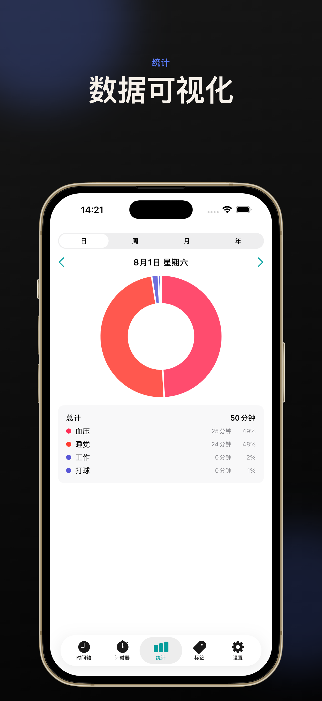
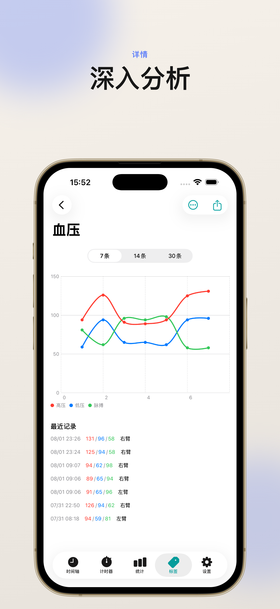

时间轴视图
按日、周、月、年直观查看所有活动记录，事件按时段清晰排列，回顾一天的安排一目了然。
简洁的界面，专注于核心的时间记录体验。
按日、周、月、年直观查看所有活动记录，事件按时段清晰排列，回顾一天的安排一目了然。
支持时间段和时间点两种记录方式，标签分类一目了然。手动输入、计时器、OCR 多种方式随你选择。
精美的环形图与列表展示时间分配趋势，支持日 / 周 / 月 / 多个维度切换，了解时间去向。
对准血压计拍照，自动识别收缩压、舒张压、脉搏。也可手动记录体重，模板化录入省心省力。
一键开始追踪活动，预设常用活动模板，工作、学习、运动计时更顺畅。
基于 CloudKit 跨设备自动同步，数据安全可靠。所有记录只属于你。
支持将记录导出为 PDF，方便分享、打印、归档与备份。
支持系统听写输入与 Siri 快捷指令，说一句话就能开始或停止计时。
SwiftUI 原生设计，跟随系统深色模式，流畅的动画与细腻的交互，让记录时间成为一种享受。
从第一次打开应用到查看自己的时间分布，只需要几分钟。
点击右上角「+」按钮，选择时间段或时间点记录方式。
用 #工作 #学习 #运动 等标签对活动进行分类，方便后续筛选。
切到「计时器」标签，一键开始追踪当前活动，自动生成时间记录。
在「统计」中按日 / 周 / 月 / 年查看时间分配，了解自己的时间都去了哪里。
从时间轴、计时器到血压 OCR，关键功能一屏展示。



